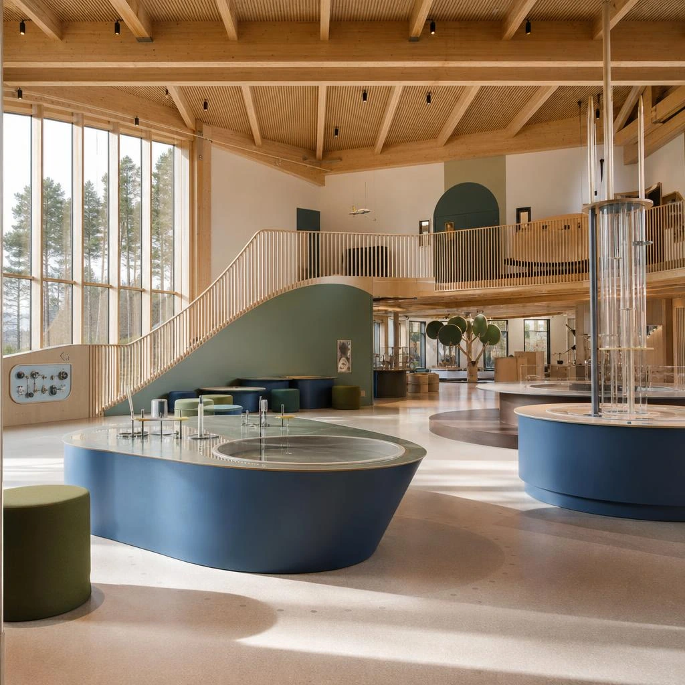
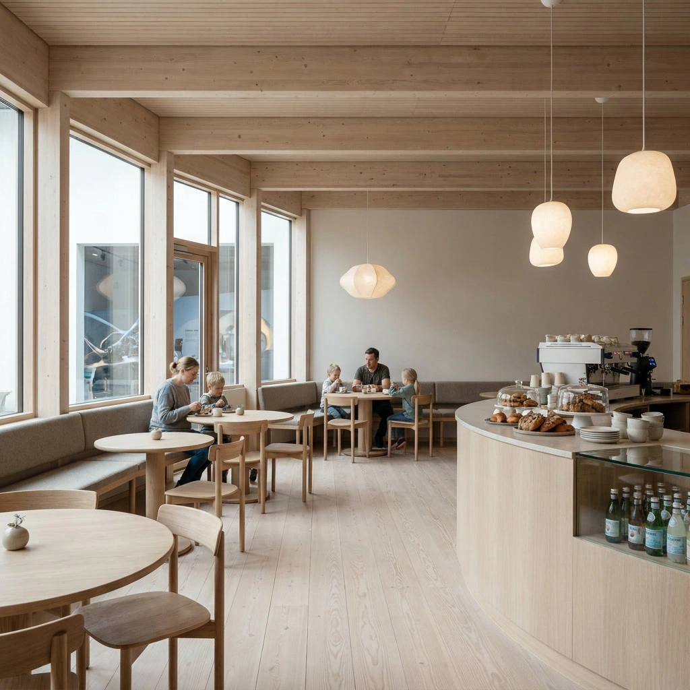
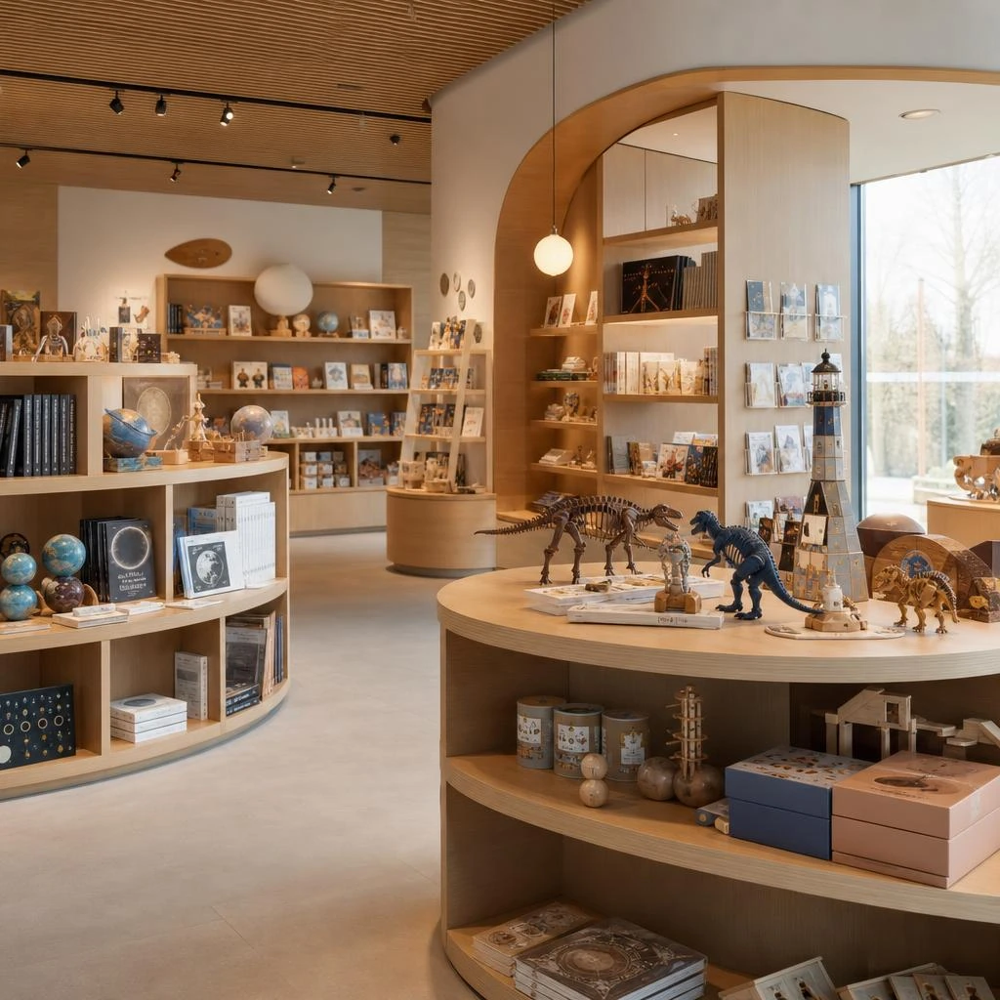

Admission & tours
Free entry
General admission: 0 NOK
Guided tours leave every hour · 70 NOK per person
Groups of 6+ can arrange a guided tour in advance.
General admission is free, the museum is open Tuesday to Sunday, and practical information is kept simple so you can spend less time planning and more time exploring.
Folkets Vitensenter · Teiealleen 11 · 2030 Nannestad

The details most families want before leaving home — all in one place.
Admission & tours
General admission: 0 NOK
Guided tours leave every hour · 70 NOK per person
Groups of 6+ can arrange a guided tour in advance.
Location & travel
Nearest bus stop: Nannestad Torg. Buses 410, 413 and 420 stop there.
Parking is always free. Use Ekerveien 6 by Granåsgården. On weekends, Nannestad Ungdomsskole parking is also available.
Opening hours
Accessibility
A café and museum shop make it easier to turn the visit into a full day out.

Food & drink
Light lunches, soft drinks, coffee, snacks and more are available in the café attached to the museum.

Shop
Take the experience home with museum memorabilia, gifts and activity packs that keep the exploration going.
Coming with a group?
Groups of six or more can contact the museum to arrange a tour.